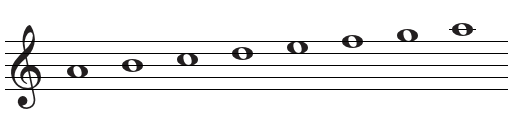

Урок 20. Строение минорной гаммы. Гамма Ля-минор.
Теория
Минорная гамма — это последовательность из семи звуков, построенная по определённому порядку тонов и полутонов, но с другим расположением, чем в мажоре. Минорная гамма звучит мягко и грустно.
- В натуральной минорной гамме между Ля–Си, Си–До, Ре–Ми, Фа–Соль — тон; между До–Ре и Ми–Фа — полутон.
- Гамма Ля-минор состоит из нот: Ля, Си, До, Ре, Ми, Фа, Соль, Ля.
- В начале нотной строки у Ля-минора нет знаков при ключе.
Строение натуральной минорной гаммы: тон — полутон — тон — тон — полутон — тон — тон.
Минорные гаммы бывают трёх видов: натуральная, гармоническая и мелодическая. В этом уроке рассматривается натуральная гамма.
Знание строения минорной гаммы помогает исполнять и сочинять музыку в минорных тональностях.
Упражнения
- Распознавание интервала: Определите, какой интервал между нотами — тон или полутон (Между Ля и Си — тон; Между Си и До — полутон; Между Фа и Соль — тон; Между Ми и Фа — полутон).
- Пение: Пропойте гамму Ля-минор вверх и вниз (Ля, Си, До, Ре, Ми, Фа, Соль, Ля).
Аудио-примеры
Гамма Ля-минор вверх и вниз:
Визуальные примеры
Строение гаммы Ля-минор на нотном стане:

Гамма Ля-минор на нотном стане: